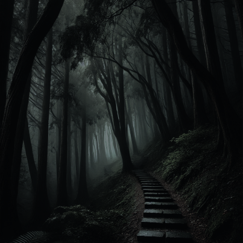

紅衣小女孩傳說
- 背景故事
- 紅衣小女孩的傳說源於台灣，特別是在台中地區被廣為流傳。據說1990年代，一群登山客在台中大坑登山時，無意中拍攝到一名身穿紅衣的年輕女孩站在隊伍的最後面。奇怪的是，當時沒有人記得看見這名女孩，也不清楚她的身份。這段影片後來在靈異節目中播出，迅速成為台灣家喻戶曉的都市傳說。
- 靈異傳聞
- 根據民間傳說，紅衣小女孩的出現象徵著不祥，據說她能夠迷惑人心，使人走入危險或迷路。這個故事通常與台灣的另一個民間信仰「魔神仔」有關，魔神仔是一種神秘的靈體，傳說可以引導人們走向未知的地方。紅衣小女孩被認為是這些靈體的代表，象徵著一種無法解釋的神秘力量。
- 文化影響
- 紅衣小女孩的傳說深深影響了台灣的大眾文化，許多電視節目、電影甚至小說都曾以此為題材，將這一靈異故事搬上螢幕。著名的電影《紅衣小女孩》系列便是基於這個傳說改編，並進一步塑造了紅衣小女孩這一靈異形象，讓人對她又敬又畏。
- 結語
- 紅衣小女孩不僅是台灣的一則都市傳說，更象徵了現代社會中人們對未知與神秘的恐懼。這個故事提醒人們，雖然科技進步帶來了便利，但對於無法解釋的事物，我們依然保持敬畏。紅衣小女孩的傳說或許會在未來繼續以不同形式存在，成為世代流傳的恐怖象徵。
紅衣小女孩住所
- 大坑步道
- 
- 台中大坑七號步道，位於茂密的山林深處。這條步道因紅衣小女孩的傳說而聞名——據說，她經常出現在樹叢之間，穿著鮮紅的衣服，靜靜地注視著過路人。1990年代，一段拍攝於此的靈異影片捕捉到她的身影，引發全台熱議，使這條步道成為靈異愛好者的探險地。夜幕降臨後，步道在黑暗中更顯壓迫，伴隨神秘的腳步聲，仿佛隨時會再現那位神秘女孩的影子，讓人不寒而慄。